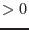

| Parameter | Mand | Type | Default | Constraints |
| evtfile | yes | string | | |
Input event list from which the images will be created.
|
| ootfile | no | string | | |
Input out-of-time event list (only for EPIC-pn) from which the out-of-time images will be created.
|
| fwcfile | no | string | | |
Input filter-wheel-closed event list from which the filter-wheel-closed images will be created. Needed if withfwcimages is set to ``yes'' (default)
|
| attfile | no | string | | |
Input attitude file, needed if withexposure is set to ``yes'' (default) or if withattcalc is set to ``yes''.
|
| gtifile | no | string | | |
Input good-time-interval file, if time selection will be done.
|
| withemtaglenoise | no | boolean | true | true false false |
boolean to choose whether or not noisy EPIC-MOS CCDs will be identified by emtaglenoise
and removed from the output images.
|
| withbadpixupdate | no | boolean | true | truefalse |
boolean to choose whether or not the bad-pixel extensions of all input event files will be conformed to each other.
|
| withfwcimages | no | boolean | true | truefalse |
boolean to choose whether or not filter-wheel-closed images will be created.
|
| withwindowmode | no | boolean | false | truefalse |
This parameter allows to include data of CCDs operated in large/small window mode.
Note that in this case no filter-wheel-closed images are created for the CCDs that are in window mode!
|
| pimin | no | integer list | '200 500 1000 2000 4500' | 0,20000 |
Lower energy boundary in PI channels
|
| pimax | no | integer list | '500 1000 2000 4500 12000' | 0,20000 |
Upper energy boundary in PI channels
|
| patmin | no | integer list | | 0,12 |
Lower boundary for PATTERN selection
|
| patmax | no | integer list | | 0,12 |
Upper boundary for PATTERN selection
|
| flag | no | string | | |
Flag to be used for the selection of the final images according to selectlib
|
| flagout | no | string | | |
Flag to be used for the selection of events in the shielded detector areas according to selectlib
|
| ximagemin | no | real | 1 | |
evselect: If set, the lower limit of  coordinate for image extraction. coordinate for image extraction.
|
| ximagemax | no | real | 640 | |
evselect: If set, the upper limit of coordinate for image extraction.
|
| yimagemin | no | real | 1 | |
evselect: If set, the lower limit of  coordinate for image extraction. coordinate for image extraction.
|
| yimagemax | no | real | 640 | |
evselect: If set, the upper limit of coordinate for image extraction.
|
| imagebinning | no | string | ``imageSize'' | ``imageSize''``binSize'' |
evselect: Parameter to choose to use either bin size or total image size to determine the
binning factor for image extraction.
If set to ``binSize'', values are taken from ximagebinsize and yimagebinsize.
If set to ``imageSize'', values are taken from ximagesize and yimagesize.
|
| ximagebinsize | no | real | 1 |  |
evselect: If set, the binning factor for axis in image creation
|
| yimagebinsize | no | real | 1 | |
evselect: If set, the binning factor for axis in image creation
|
| ximagesize | no | integer | 600 | |
evselect: If set, the size of the image (ie. number of image pixels) along the axis;
for extraction using integer valued columns, the extracted image size may be somewhat smaller than the requested image size.
|
| yimagesize | no | integer | 600 | |
evselect: If set, the size of the image (ie. number of image pixels) along the axis;
for extraction using integer valued columns, the extracted image size may be somewhat smaller than the requested image size.
|
| withxranges | no | boolean | false | truefalse |
evselect: boolean to choose whether or not to use the ximagemin and ximagemax
values for the coordinate ranges for image extraction - if true, the parameter ranges are used; if false, the ranges are determined from the data
|
| withyranges | no | boolean | false | truefalse |
evselect: boolean to choose whether or not to use the yimagemin and yimagemax
values for the coordinate ranges for image extraction - if true, the parameter ranges are used; if false, the ranges are determined from the data
|
| squarepixels | no | boolean | false | truefalse |
evselect: When ximagesize and yimagesize are set, forces the and bin sizes to be the same. The larger of the two bin sizes is used.
|
| raimagecenter | no | real | | |
evselect: If set, right ascension for the center of the output image, in decimal degrees.
|
| decimagecenter | no | real | | |
evselect: If set, declination for the center of the output image, in decimal degrees.
|
| withcelestialcenter | no | boolean | false | truefalse |
evselect: Boolean to determine if the image is shifted so that it is centered on the sky posistion
specified by raimagecenter and decimagecenter.
|
| withattcalc | no | boolean | no | |
boolean to choose whether or not to new image coordinates will be calculated according to nominalra, nominaldec, and imagesize
|
| nominalra | no | real | 0.0 | 0 360 360 |
attcalc: Celestial RA coordinate of central reference point (If withattcalc = yes)
|
| nominaldec | no | real | 0.0 | -90+90 |
attcalc: Celestial Dec coordinate of central reference point (If withattcalc = yes)
|
| imagesize | no | real | 0.36 | |
attcalc: Half-size of final image (in degrees) (If withattcalc = yes)
|
| withexposure | no | boolean | true | truefalse |
boolean to choose whether or not exposure maps will be created with eexpmap.
|
| withmask | no | boolean | true | truefalse |
boolean to choose whether or not a mask will be created. (If withexposure = yes).
|
| threshold1 | no | float | 0.01 | [0.0 param1.0] param1.0] |
emask: Threshold parameter 1: fraction of maximum exposure. (If withmask = yes).
|
| threshold2 | no | float | 0.5 | [0.0param10.0] |
emask: Threshold parameter 2: threshold for gradient of exposure. (If withmask = yes).
|
| Parameter | Mand | Type | Default | Constraints |